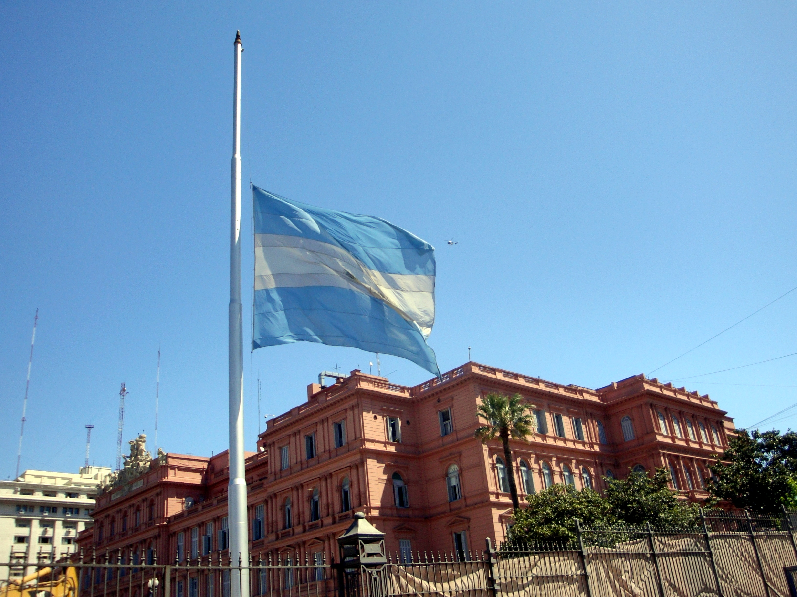

Javier Milei viaja a Roma y decreta duelo nacional tras la muerte del Papa Francisco
Política | 21 de abril de 2025 — La Argentina y el mundo católico se encuentran de luto tras conocerse la noticia del fallecimiento del Papa Francisco, el primer pontífice latinoamericano y argentino de la historia. En respuesta, el presidente Javier Milei emitió un mensaje oficial lamentando la pérdida y anunció que viajará a Roma para participar del funeral que se celebrará en el Vaticano. Además, el Gobierno nacional decretó siete días de duelo en todo el país.
A través de sus redes sociales, el mandatario expresó: "Lamentamos profundamente el fallecimiento del Papa Francisco. Más allá de las diferencias, reconocemos su rol como líder espiritual y su influencia global. Acompañamos al pueblo católico en este momento de dolor." El mensaje fue acompañado por una imagen en blanco y negro del pontífice, en señal de respeto.
ADIÓS
— Javier Milei (@JMilei) April 21, 2025
Con profundo dolor me entero esta triste mañana que el Papa Francisco, Jorge Bergoglio, falleció hoy y ya se encuentra descansando en paz. A pesar de diferencias que hoy resultan menores, haber podido conocerlo en su bondad y sabiduría fue un verdadero honor para mí.… pic.twitter.com/3dPPFoNWBr
Duelo nacional por una figura histórica
El decreto oficial, firmado por el presidente y publicado en el Boletín Oficial, establece siete días de duelo nacional, durante los cuales la bandera argentina permanecerá izada a media asta en todos los organismos públicos. También se invita a los ciudadanos y a las instituciones a rendir homenaje a quien fuera una de las figuras más influyentes del siglo XXI.
Desde el Gobierno informaron que la medida busca “honrar la memoria de un argentino que llevó el nombre del país a cada rincón del mundo” y destacar su rol como símbolo de diálogo interreligioso, paz y justicia social.
Milei en Roma: una despedida oficial
Fuentes de Casa Rosada confirmaron que Javier Milei ya tiene previsto su viaje a Roma, donde participará de las exequias oficiales en la Basílica de San Pedro. El mandatario será acompañado por una pequeña comitiva oficial, y se espera que mantenga reuniones protocolares con autoridades del Vaticano y representantes de otros Estados.
Esta será la segunda visita de Milei a la Santa Sede desde que asumió la presidencia, lo que refuerza la importancia diplomática y simbólica que el Vaticano tiene para el país.
Un legado que trasciende fronteras
Jorge Mario Bergoglio, nacido en Buenos Aires en 1936, fue elegido Papa en marzo de 2013, adoptando el nombre de Francisco en honor a San Francisco de Asís. Su papado estuvo marcado por un enfoque pastoral centrado en la humildad, la justicia social, la ecología y el acercamiento a los marginados. Si bien su relación con el actual gobierno argentino fue tensa en varios momentos, su figura continúa siendo valorada por millones de fieles en el país y el mundo.
Diversas organizaciones religiosas, dirigentes políticos y líderes internacionales han expresado su pesar por la partida del pontífice, quien se convirtió en un símbolo de esperanza para muchos sectores, incluso fuera del ámbito religioso.